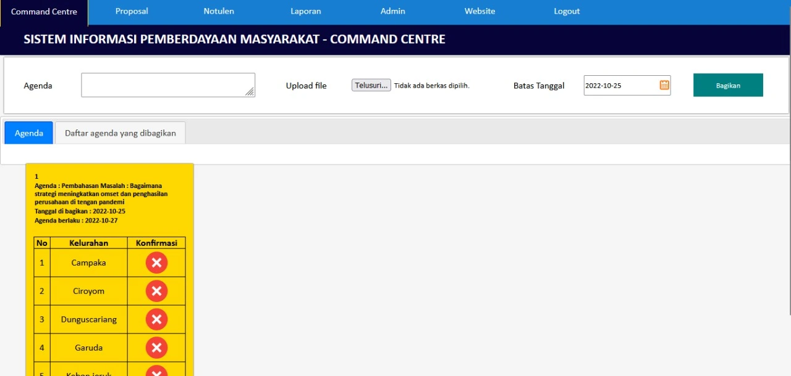
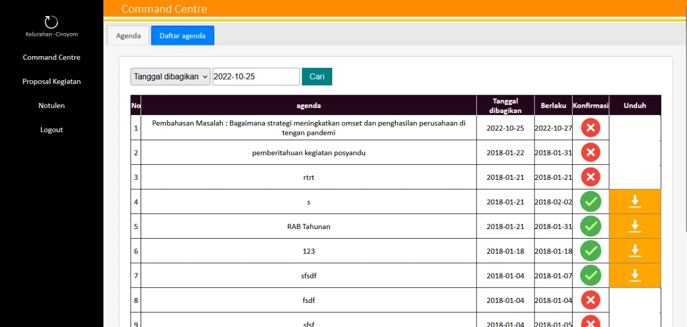
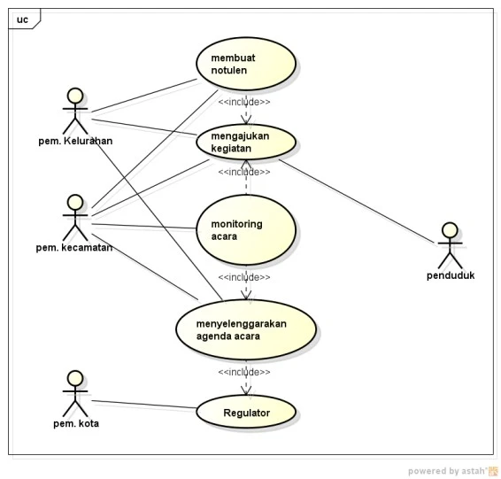
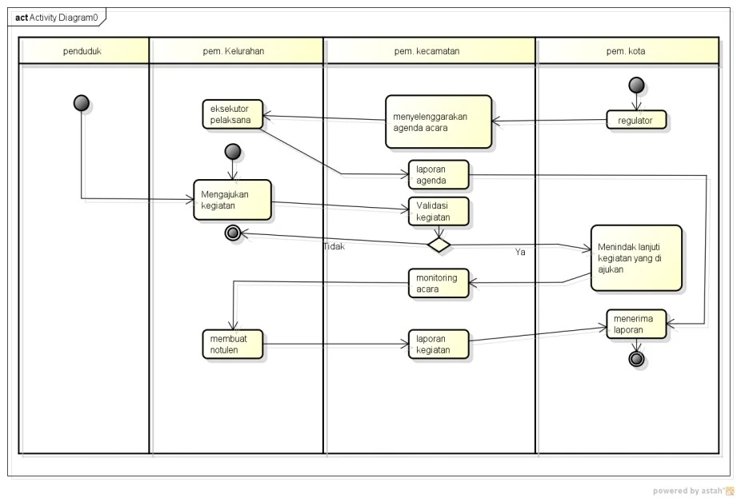

website command center untuk informasi pemberdayaan masyarakat pada kecamatan.
Terdapat sisi admin kecamatan dan multi daftar user desa, (bisa diseusuaikan!).

Admin Kecamatan
user : andir
Password : 123123

Admin desa
user : campaka
Password : 123123
user : ciroyom
Password : 123123
user : dunguscariang
Password : 123123
user : garuda
Password : 123123
user : kebonjeruk
Password : 123123
user : maleber
Password : 123123
Demo : Klik disini
Fitur unggulan:
- Agenda kecamatan broadcast untuk daftar desa
- Pengajuan Proposal
- Berita/pengumuman
- Company Profile
- Notulen
Bahan pembuatan
- HTML sebagai kerangka
- PHP sebagai bahasa program
- CSS sebagai pemanis dan layout
- Javascript dan Jquery sebagai interaksi langsung
- MYSQL sebagai database
- Bootstrap 3
- tinymce
Berikut adalah UseCase yang sedang berjalan di
Kecamatan Andir.

Identifikasi Aktor
1. pem. Kelurahan
Merupakan aktor yang membuat proposal kegiatan dan menerimma agenda kegiatan dari kecamatan
2. pem. kecamatan
Merupakan aktor yang memonitor agenda, kegiatan dan pengajuan dan menerima notulen
3. pem. kota
Merupakan aktor yang mengatur agenda kegiatan dan memberikan ajuan
4. penduduk
Merupakan orang yang mengajukan permohonan kegiatan
Deskripsi Usecase
1. membuat notulen
Merupakan proses pembuatan laporan notulen
2. mengajukan kegiatan
Merupakan proses pengajuan permohonan pembuatan kegiatan
3. monitoring acara
Merupakan proses mengolah data agenda
4. menyelenggarakan agenda acara
Merupakan proses pengiriman agenda yang di bagikan kepada kelurahan.
5. Regulator
Merupakan proses pengamat dan mengarahkan pelaksanaan agenda
Activity Diagram

Deskripsi Activity
1. eksekutor pelaksana
Merupakan proses pelaksana agenda yang di bagikan dari kecamatan.
2. Mengajukan kegiatan
Merupakan proses pengajuan permohonan kegiatan dari kelurahan
3. membuat notulen
Merupakan proses pembuatan laporan notulen kegiatan setelah kegiatan tersebut dilaksanakan
4. menyelenggarakan agenda acara
Merupakan penyelenggaraan agenda yang telah dibagikan kecamatan
5. laporan agenda
Merupakan perekapan laporan agenda
6. Validasi kegiatan
Merupakan proses pemvalidasian kegiatan yang kelurahan ajukan
7. monitoring acara
Merupakan proses pengolahan dan mengamati agenda
8. laporan kegiatan
Merupakan pembuatan laporan kegiatan
9. regulator
Merupakan proses pengamat dan mengarahkan pelaksanaan agenda
10. Menindak lanjuti kegiatan yang di ajukan
Merupakan proses penindakan lanjutan setelah kecamatan memvalidasi kegiatan
11. menerima laporan
Merupakan proses penerimaan laporan dari agenda dan kegiatan